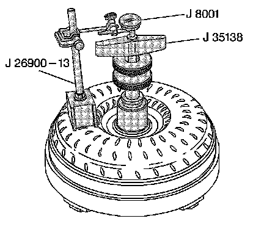

Torque Converter End Play Inspection
Torque Converter End Play Inspection
Tools Required
^ J 8001 Dial Indicator Set
^ J 26900-13 Magnetic Indicator Base
^ J 35138 Converter End Play Checker
^ J 39195 Converter End Play Check Tool

1. Inspect the torque converter and replace if any of the following conditions exist:
^ Evidence of damage to the pump assembly.
^ Metal particles are found after flushing the cooler and cooler lines.
^ External leaks in the hub area.
^ Converter pilot is broken, damaged or poor fit into the crankshaft.
^ Converter hub is scored or damaged.
^ Internal damage to the stator.
^ Contamination from engine coolant.
^ Excessive end play.
Important: The torque converter should not be replaced if the fluid has an odor, discoloration or no evidence of metal or clutch plate material.
Flushing the torque converter is not recommended.
2. Install the J 35138, the J 26900-13 and the J 8001 or J 39195 to be used with the 300 mm torque converter.
^ The end play for a 245 mm torque converter should be 0-0.38 mm (0-0.015 in).
^ The end play for a 298 mm torque converter should be 0.1-0.48 mm (0.004-0.019 in).
^ The end play for a 258 mm and 300 mm torque converter should be 0.1-0.5 mm (0.004-0.020 in).
3. Remove the tools.